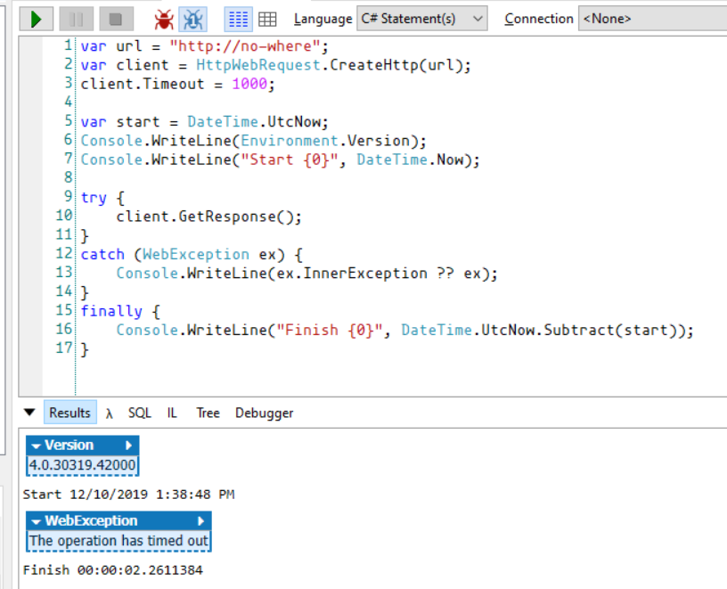
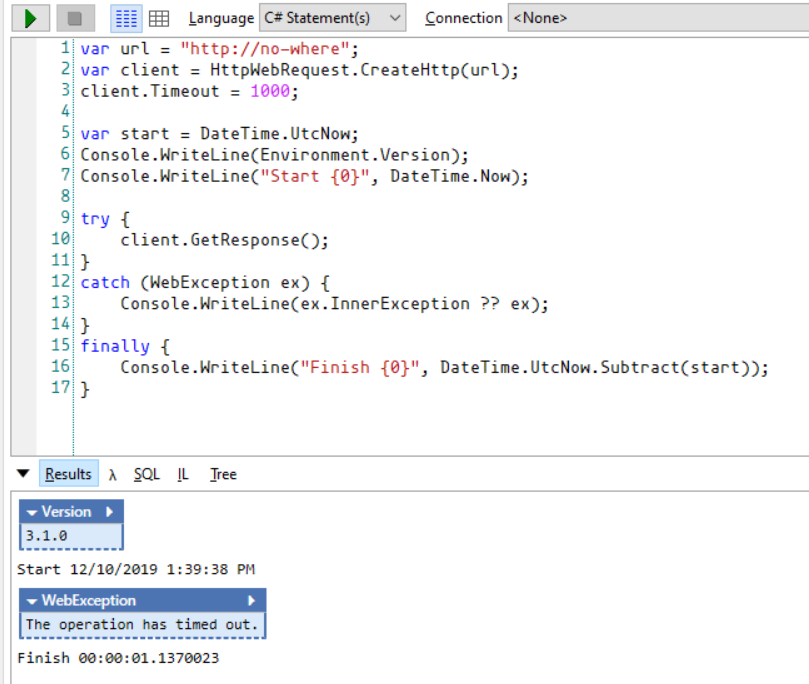
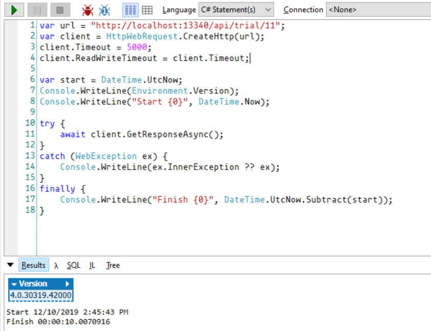
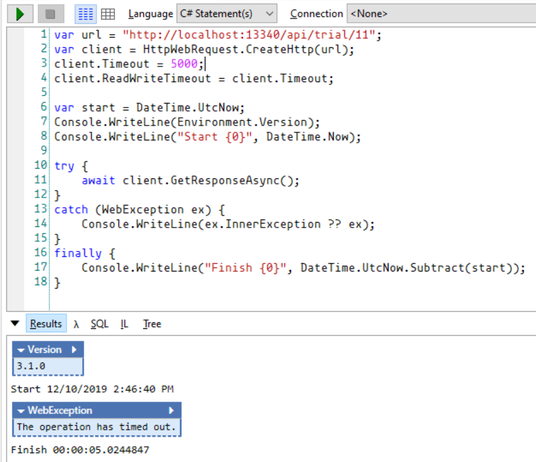
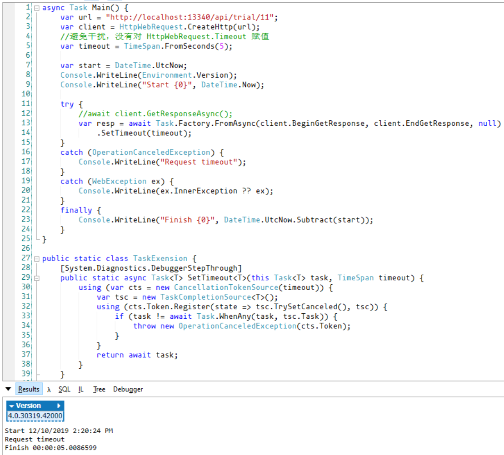

随着纯单体项目的逐渐减少，远程服务调用失败变得十分常见。由于 HTTP 协议的开放性，远程服务调用异常的复杂度在增长。
HTTP 状态码是描述响应的重要信息，参考 List of HTTP status codes。
3XX 响应不在本文讨论之列
HTTP 状态码目前集中于 1XX 到 5XX 区间，这形成以下事实：
REST 风格接口往往使用 200、400、500 描述响应，部分版本的 ASPNET Core 中将暴露的路由所在方式定义为 void 可以观察到 204 状态码（使用 IActionResult 则可以进行更精确的控制）。
在实践中，各厂商的策略也千差万别：
微信笃信自己的服务器不会挂，所有非 200 响应均可认为服务出了问题，但这做法并不另类
大多数部分客户端认为 4XX 和 5XX 为异常响应，但各语言集成的 HTTP 客户端或者第三方以及各版本存在部分差异。以 .net 中的 WebClient、HttpWebRequest 来说， 遇到 4XX 和 5XX 直接抛出异常，这使得即便接收到 HTTP 响应，获取响应状态码及正文却需要在 catch 语句中进行，使用起来极为丑陋。
WebClient API 看起来简单，但建议避免使用 WebClient ，理由如下：
HttpWebRequest 必须在异常捕获逻辑中处理服务器的非 2xx 响应，同步版本支持超时设置，请求示例：
var url = "http://localhost:4908/api/test/2";
//url = "http://www.google.com";
var client = HttpWebRequest.CreateHttp(url);
client.Method = HttpMethod.Get.Method;
client.Timeout = 3000;
try {
var resp = client.GetResponse(); //超时生效
//var resp = await client.GetResponseAsync() as HttpWebResponse; //超时不生效
using (var stream = resp.GetResponseStream())
using (var reader = new StreamReader(stream)) {
var respText = await reader.ReadToEndAsync();
Console.WriteLine(respText);
}
}
catch (WebException ex) {
//开始处理失败请求
var resp = ex.Response as HttpWebResponse;
if (resp != null) {
Console.WriteLine("request failed: {0}, statusCode: {1}", resp.StatusDescription, resp.StatusCode);
using (var stream = ex.Response.GetResponseStream())
using (var reader = new StreamReader(stream)) {
var respText = await reader.ReadToEndAsync();
Console.WriteLine(respText);
}
}
//服务器无法响应，比如 DNS 查找失败
else {
throw ex.InnerException ?? ex;
}
}HttpWebRequest 存在着设计和实现缺陷，都与超时相关。在开始之前必须指出：.net core 不同版本存在差异，.net framework 不同版本存在差异，.net framework 与 .net core 存在差异
首先是DNS 查找成本不计入超时时长，在 .net framework 上能够复现，在 .net core 版本上可能得到了修正。


调用结果显示，设置了1秒的超时时间，.net framework 版本耗时 2.261 秒，差异不容忽略，.net core 版本耗时 1.137 秒，满足预期。
接着是异步版本不支持超时，即设置了超时时长的 await HttpWebRequest.GetResponseAsync() 无法按预期工作，参考
明明是设计与实现问题，官方却解释到 ”The Timeout property has no effect on asynchronous requests made with the BeginGetResponse or BeginGetRequestStream method“ 云云。
为什么这么说？因为 .net core 版本修复了这个问题，请继续阅读。
http://localhost:13340/api/trial/11 是一个 webapi 接口，内部使用 Thread.Sleep(10000)挂起10秒，问题在 .net framework 上能够复现，在 .net core 版本按预期工作。


这意味着我们必须做更多的工作。超时模式本可以解决这个问题，需要先借助 TaskFactory.FromAsync() 将 APM 模式（Asynchronous Programming Model）转换成 TPL 模式，即基于 Task 的异步模式
async Task Main() {
var url = "http://localhost:13340/api/trial/11";
var client = HttpWebRequest.CreateHttp(url);
//避免干扰，没有对 HttpWebRequest.Timeout 赋值
var timeout = TimeSpan.FromSeconds(5);
var start = DateTime.UtcNow;
Console.WriteLine(Environment.Version);
Console.WriteLine("Start {0}", DateTime.Now);
try {
//await client.GetResponseAsync();
var resp = await Task.Factory.FromAsync(client.BeginGetResponse, client.EndGetResponse, null)
.SetTimeout(timeout);
}
catch (OperationCanceledException) {
Console.WriteLine("Request timeout");
}
catch (WebException ex) {
Console.WriteLine(ex.InnerException ?? ex);
}
finally {
Console.WriteLine("Finish {0}", DateTime.UtcNow.Subtract(start));
}
}
public static class TaskExension {
[System.Diagnostics.DebuggerStepThrough]
public static async Task<T> SetTimeout<T>(this Task<T> task, TimeSpan timeout) {
using (var cts = new CancellationTokenSource(timeout)) {
var tsc = new TaskCompletionSource<T>();
using (cts.Token.Register(state => tsc.TrySetCanceled(), tsc)) {
if (task != await Task.WhenAny(task, tsc.Task)) {
throw new OperationCanceledException(cts.Token);
}
}
return await task;
}
}
}
.net core 版本同样工作完好，在此忽略，至此 HttpWebRequest 的坑点已经数的差不多了。
Github 上的接近 7000 星项目 restsharp/RestSharp 使用 HttpWebRequest 完成实现，关键代码见 Http.Sync.cs，它支持以下模式：
项目 HttpWebRequest 完成实现，异步请求的版在回调版本基础上借助 TaskCompletionSource 完成实现，绕开了 await HttpWebRequest.GetResponseAsync() 的超时缺陷。但 HttpWebRequest 固有的 DNS 问题无法避免，故项目在 Note about error handling 中特别备注到：
Note about error handling
If there is a network transport error (network is down, failed DNS lookup, etc),
HttpClient 的出现使得情况些许改观，不考虑超时，使用4行代码即可读取返回非 2XX 状态码的响应正文：
var client = new HttpClient();
var url = "http://localhost:4908/api/test/2";
var resp = await client.GetAsync(url);
//遇到4XX、5XX 也不会抛出异常
var respText = await resp.Content.ReadAsStringAsync();
Console.WriteLine(respText);可以使用
HttpResponseMessage.EnsureSuccessStatusCode()进行成功请求断言
添加异常处理与超时机制，代码在 20 行左右，是 HttpWebRequest 规模的 1/3 左右。
var url = "http://localhost:4908/api/test/1";
//url = "http://www.google.com";
var client = new HttpClient();
client.Timeout = TimeSpan.FromSeconds(5);
HttpResponseMessage resp = null;
try {
resp = await client.GetAsync(url);
}
catch (TaskCanceledException) {
//开始处理请求超时
Console.WriteLine("Request timeout");
throw new TimeoutException();
}
catch (HttpRequestException ex) {
//服务器无法响应，比如未开机，DNS
if (ex.InnerException is WebException ex2) {
throw ex2.InnerException ?? ex2;
}
throw ex;
}
//已获取到响应
if (resp.IsSuccessStatusCode) {
//安全地读取 resp.Content，进行反序列化等，
//也可以直接使用 EnsureSuccessStatusCode() 断言
}
else {
//开始处理失败请求
Console.WriteLine("Request failed: {0}, statusCode: {1}", resp.ReasonPhrase, resp.StatusCode);
//直接读取不会抛出异常
var respText = await resp.Content.ReadAsStringAsync();
Console.WriteLine(respText);
}可见基于 HttpClient 易于使用，然而 HttpClient 有自己的问题，虽然偏离主题，但不得不拿出篇幅来陈述。
搜索 "HttpClient dispose" 可见一二：
简单地说，HttpClient 和 DbConnection 一样都从 IDispose 继承，然而其工作方式大不一样：后者将连接释放回连接池，前者却需要4分钟关闭 TCP 连接，这导致高负载的站点可能用尽资源。
然而网上解决办法都建议静态或单例化 HttpClient 实例，如博客园站长 dudu 的C#中HttpClient使用注意：预热与长连接，9102年了，汇总下HttpClient问题，封印一个 ，这些做法会引入了其他问题：
但事实证明，有一个更严重的问题：HttpClient 不遵循 DNS 变化，它会（通过 HttpClientHandler）独占连接，直到套接字关闭。没有时间限制！
在实际开发中 DNS 变化可能不是很大问题，虽然 HttpClient 是线程安全的，但是唯一的 HttpClient 不能满足差异化的 Http 请求，比如有时候需要自定义头部，有时候需要使用证书发起请求，静态或单例化的 HttpClient 不能很好地满足需要。
为了克服以上问题，微软在 .Net core 2.1 版本引入了 HttpClientFactory，基础使用方法简单，请自行阅读不再详细陈述。
IHttpClientFactory 内部引用了 Policy，建议非常谨慎地使用重试策略，讨论不在本篇展开。